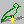

Each cel in a view has an origin. By default, the origin in SCI is the bottom center of the view. In the left-hand pane, you can manually specify an offset for the origin. An easier way is to choose the origin tool  from the toolbar, and just click on the part of the cel you want to use as the origin. The origin of the view is shown by a flickering pixel.
In addition to being important for the game, the origin of each cel is used when applying drawing operations to multiple cels. If they are set correctly, then generally drawing on one spot (e.g. the character's eye) will change the same spot in another cel.